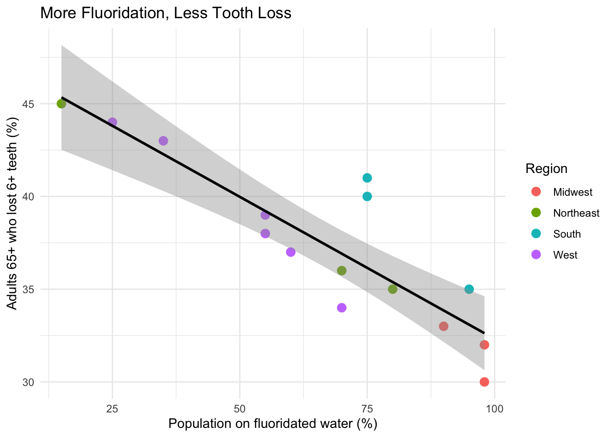
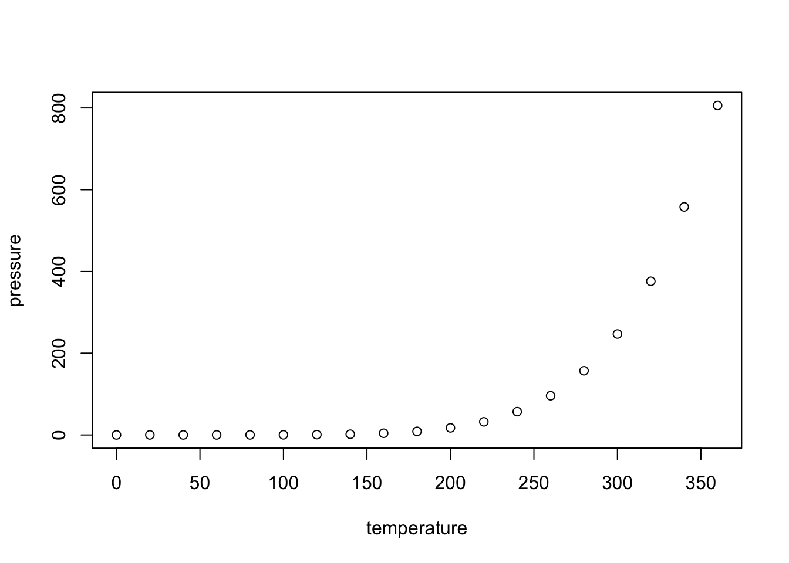

Community water fluoridation means adding a small amount of fluoride to public drinking water to help prevent tooth decay.
In 2025, Utah became the first state to ban fluoride in public drinking water, and Florida followed soon after.
Question: Do states where more people drink fluoridated water have lower rates of tooth loss in adults?
This is not real data I made it up haha
fluoride = tibble(
state = c("Utah", "Idaho", "Colorado", "Arizona", "California", "Oregon",
"Texas", "Florida", "Georgia", "Ohio", "Illinois", "Minnesota",
"New York", "Maine", "New Jersey"),
region = c("West", "West", "West", "West", "West", "West",
"South", "South", "South", "Midwest", "Midwest", "Midwest",
"Northeast", "Northeast", "Northeast"),
pct_fluoridated = c(55, 35, 70, 55, 60, 25, 75, 75, 95, 90, 98, 98, 70, 80, 15),
pct_teeth_lost = c(38, 43, 34, 39, 37, 44, 40, 41, 35, 33, 32, 30, 36, 35, 45)
)
knitr::kable(fluoride)| state | region | pct_fluoridated | pct_teeth_lost |
|---|---|---|---|
| Utah | West | 55 | 38 |
| Idaho | West | 35 | 43 |
| Colorado | West | 70 | 34 |
| Arizona | West | 55 | 39 |
| California | West | 60 | 37 |
| Oregon | West | 25 | 44 |
| Texas | South | 75 | 40 |
| Florida | South | 75 | 41 |
| Georgia | South | 95 | 35 |
| Ohio | Midwest | 90 | 33 |
| Illinois | Midwest | 98 | 32 |
| Minnesota | Midwest | 98 | 30 |
| New York | Northeast | 70 | 36 |
| Maine | Northeast | 80 | 35 |
| New Jersey | Northeast | 15 | 45 |
region_avg = fluoride %>%
group_by(region) %>%
summarise(avg_fluoridated = mean(pct_fluoridated),
avg_teeth_lost = mean(pct_teeth_lost))
knitr::kable(region_avg, digits = 1)| region | avg_fluoridated | avg_teeth_lost |
|---|---|---|
| Midwest | 95.3 | 31.7 |
| Northeast | 55.0 | 38.7 |
| South | 81.7 | 38.7 |
| West | 50.0 | 39.2 |
The Midwest has the most fluoridation and the least tooth loss. ## Fluoridation vs. Tooth Loss
fluoride %>%
ggplot(aes(x = pct_fluoridated,
y = pct_teeth_lost)) +
geom_point(aes(color = region), size = 3) +
geom_smooth(method = "lm", se = TRUE, color = "black") +
labs(title = "More Fluoridation, Less Tooth Loss",
x = "Population on fluoridated water (%)",
y = "Adults 65+ who lost 6+ teeth (%)",
color = "Region") +
theme_minimal()## `geom_smooth()` using formula = 'y ~ x'
As fluoridation goes up, tooth loss goes down.mod1 = glm(pct_teeth_lost ~ pct_fluoridated, data = fluoride)
summary(mod1)##
## Call:
## glm(formula = pct_teeth_lost ~ pct_fluoridated, data = fluoride)
##
## Coefficients:
## Estimate Std. Error t value Pr(>|t|)
## (Intercept) 47.63748 1.62350 29.342 2.89e-13 ***
## pct_fluoridated -0.15317 0.02288 -6.694 1.48e-05 ***
## ---
## Signif. codes:
## 0 '***' 0.001 '**' 0.01 '*' 0.05 '.' 0.1 ' ' 1
##
## (Dispersion parameter for gaussian family taken to be 4.908065)
##
## Null deviance: 283.733 on 14 degrees of freedom
## Residual deviance: 63.805 on 13 degrees of freedom
## AIC: 70.285
##
## Number of Fisher Scoring iterations: 2The p-value for pct_fluoridated is below 0.05, so
fluoridation is significantly related to tooth loss.
This is an R Markdown document. Markdown is a simple formatting syntax for authoring HTML, PDF, and MS Word documents. For more details on using R Markdown see http://rmarkdown.rstudio.com.
When you click the Knit button a document will be generated that includes both content as well as the output of any embedded R code chunks within the document. You can embed an R code chunk like this:
summary(cars)## speed dist
## Min. : 4.0 Min. : 2.00
## 1st Qu.:12.0 1st Qu.: 26.00
## Median :15.0 Median : 36.00
## Mean :15.4 Mean : 42.98
## 3rd Qu.:19.0 3rd Qu.: 56.00
## Max. :25.0 Max. :120.00You can also embed plots, for example:

Note that the echo = FALSE parameter was added to the
code chunk to prevent printing of the R code that generated the
plot.